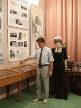
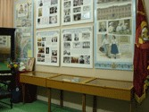
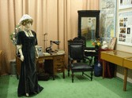
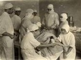
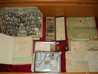
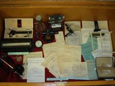

Культурно-просвітницький центр
«Музей історії коледжу»


Культурно–просвітницький центр «Музей історії Харківського медичного коледжу №1» створений в 2005 році в рамках підготовки до святкування 160–річного ювілею навчального закладу і є осередком значної навчально–виховної діяльності.
Відкриттю Музею передувала велика дослідницька і пошукова робота адміністрації, колективу викладачів і студентів, а також ветеранів праці. Експозиція Музею відтворює основні етапи становлення та розвитку Харківського медичного коледжу №1.
Перший розділ експозиції – «Харківська фельдшерська школа періоду Приказу громадської опіки (1845–1867 рр.)». Демонструються Диплом випускника фельдшерської школи за 1910 рік, газета «Харьковские губернские ведомости» за 1845 рік з оголошенням про набір до школи, підручники з різних розділів медицини: Атлас з анатомії за 1910 рік, Практикум з бактеріології за 1912 рік.
Другий розділ – Земський період (1867–1918 рр.). Стенди та експонати розповідають про реорганізацію навчального закладу після земської реформи, введення нової спеціальності–фельдшер–акушерка.
Центральне місце в Музеї займає експозиція «Кабінет директора Харківської фельдшерської школи», в якій демонструється крісло чиновника початку XІX ст., канцелярський стіл, старовинне дзеркало, друкарська машинка початку XX ст.
Третій розділ розповідає про діяльність фельдшерської школи в період між двома світовими війнами. Харків в цей час був столицею України і викладачі школи брали участь у створенні Наркомату охорони здоров’я України.
В експозиції Музею представлені унікальні матеріали і документи: квиток учня Перших Харківських курсів помічників лікарів за 1923 р., метрики учнів за 1923 р., дипломи різних років, медичні інструменти і підручники того часу, колективні фотографії за 1931–1932 роки.
Четвертий розділ присвячений діяльності навчального закладу в роки Великої Вітчизняної війни (1941–1945 рр.). Окремі експозиції розповідають про діяльність викладача хірургії Харківської фельдшерської школи, професора О.І.Мєщанінова, який в роки окупації організував лікарню для мешканців Харкова і про подвиг випускниці М.Т.Кисляк, нагородженої званням Героя Радянського Союзу.
Представлено диплом М.Т.Кисляк, її підручник, журнал «Огонек» за 1939 р., портмоне О.І.Мєщанінова, список врятованих під час окупації червоноармійців.
П’ятий розділ експозиції розповідає про відродження Харківської фельдшерсько–акушерської школи.
Сучасний період історії коледжу присвячений таким відомим випускникам як М.Г.Богдашкін і М.П.Бурих – академіків медицини: представлені дипломи, залікові книжки, нагороди і наукові праці.
Коледж пишається тим, що в 1966 році його закінчила кавалер медалі Флоренс Найтінгейл Є.І.Таранська, якою Міжнародний Комітет Червоного Хреста нагороджує за видатні заслуги в галузі гуманізму і милосердя.
Широко висвітлено святкування 150–річного і 160–річного ювілеїв коледжу. Це ювілейні газети, медалі, значки, вітальні адреси, подарунки.
На базі Музею працює первинна організація Студентського Наукового Товариства коледжу – гурток з краєзнавства і дослідження історії родини.
НАША АДРЕСА
1 корпус
м. Харкiв, 61002,
узвіз Куликівський, 3
тел./факс:
706-39-66, 706-39-64
3 корпус
м. Харкiв,
вул. Гуданова, 4/10
тел. 704-13-15
2 корпус
м. Харкiв,
вул. Амосова, 3а
тел./факс:
310-01-85, 710-27-67
4 корпус та гуртожиток
м. Харкiв,
вул. Луї Пастера, 2
тел. 393-22-72
E-mail: